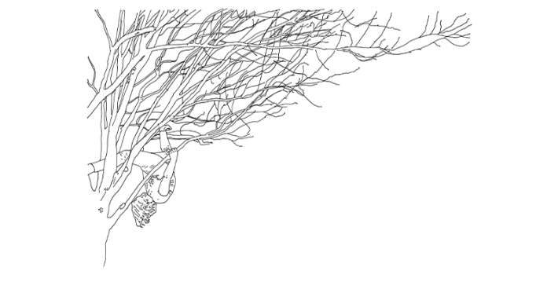
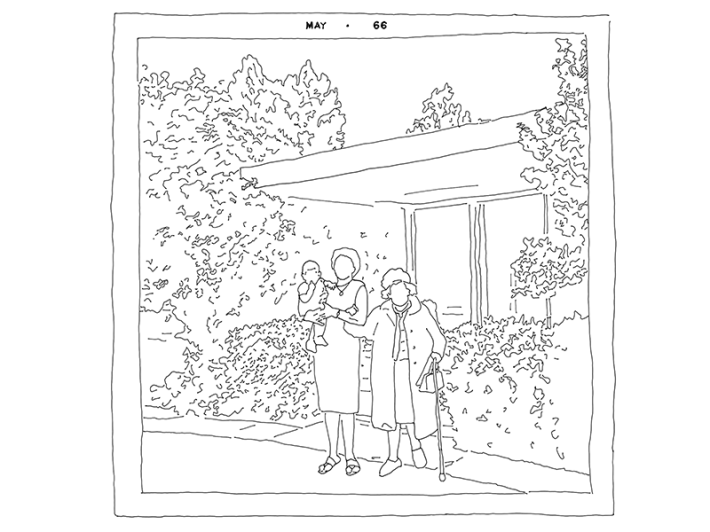
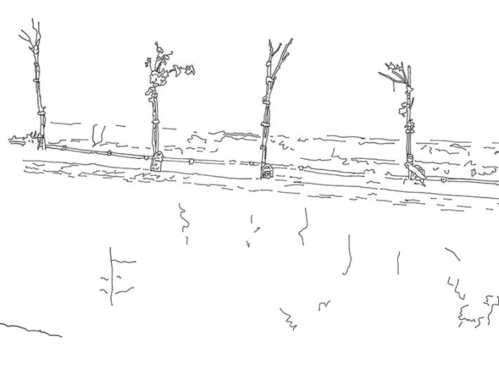
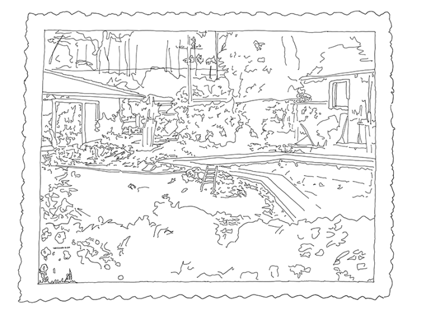
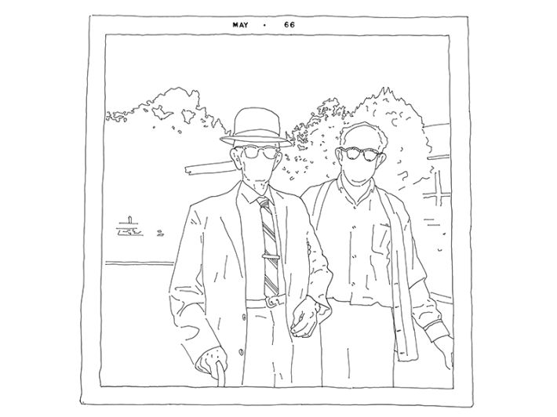
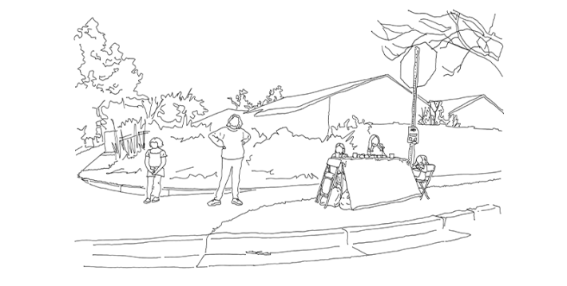
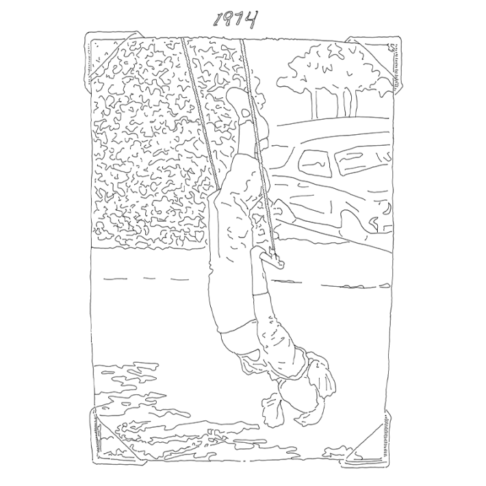
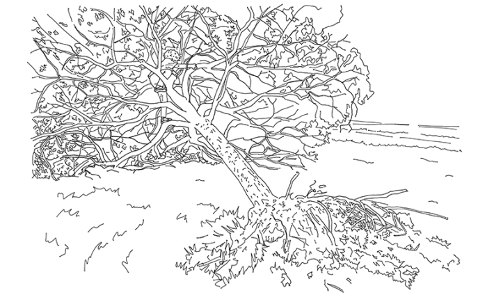

I understand that which is not visible, for example; heat, weight, pleasure, etc.
There is the visible that is seen … and the visible that is hidden …
—René Magritte
It’s late. I should be telling my nieces a bedtime story. But instead I accept their invitation and step outside into the windstorm that has had us wondering all day what the High Wind Warning really means. Their parents and I can’t remember having seen one before, don’t exactly know what to do. It’s January in Burbank, California. Earlier in the day I was headphones-on, sensitive to so much as a stomach gurgle, recording an audiobook when my engineer got a text from a studio a few miles away warning us to “save often,” that they had already lost power and with it all the work that day, the record evaporated and the words like they had never been spoken. Nothing happened to us. Nothing except all the tree branches I saw in the street when I walked over that morning, one impaled through the windshield of a parked car, perfectly vertical, like it had sprouted from the dash.
It is not enough for my nieces to stand out in the wind, feel its force push us and whip our hair. No, we must run. With it, through it, against it. As though the wind would lift us up. As though it might knock us flat. We chase after each other, after the wind itself, gust by gust learn its currents and waves and walls. It is wind enough, already flecked with debris bigger and faster and traveling more horizontally than a standard gale, that I am glad two of us are wearing glasses, have that much shield in the dark. We run, in delirious circles, arms airplane out, looping in near misses at one another. We pick up as much speed as we can without leaving the front yard lawn, the thrill of almost collision, almost disaster, almost connection still a dizzying kind of play.
We have already taken down the wind chimes. And some spinning baubles left over in the plum and crape myrtle from the holidays, the girls happy to climb up for the high ones. We have tried to imagine what can be blown down, blown away, blown into something else and smashed. That was while it was still light out, our sense of caution still tentative, an act of imagination, a faith that the people who knew about these things had chosen to sound the alarm, and we should probably do something.

Illustration by A. Kendra Greene.
The next morning school is canceled. My nieces are thrilled. They rush toward me in the hallway, no time to waste, joy that cannot be contained. Alice is 12, almost tall enough that her glowing face is even with mine. Corinne is recently 8, has a grin full of baby teeth and adult teeth and scalloped gum gaps in between, still at a stature to beam up at me. They tell me how other kids get snow days. How they thought they’d never get one. How unfair it is, to be deprived like that. But now they have one! Miraculously! They radiate vindication. I see nothing short of justice shine through them.
I know this feeling exactly. I tell them it happened to me once. Only I was in my senior year of high school, the next county over, nearly out of chances for any such event and almost gone from here, when we got, I kid you not, a rain day. Their eyes get big. That simultaneous look of incredulity and epiphany.
My nieces hardly need to voice it, their faces already say they did not know there could be rain days. Why had no one told them? What new suspension of the expected might they hope for next? I do not think to tell them that in this moment we are a mirror; that I had no idea—did not know until they told me—there could be days off for wind.
I tell them the issue, as I remember it, was the Ventura River, a purely nominal waterway in my experience up until then, a wide, bleached, and baking bed of stones and dusty earth with the occasional desert-spare plant, which was not notable because most rivers and creeks and certain lakes were at best historical designations when I was growing up in California, myths presumably based on something, the way my dad liked to point out the back way home was an old stagecoach route, but most likely now only figurative or approximate or aspirational, honorifics like the Colonel in Colonel Sanders. You said “river” and it was a mark of respect or affection, a nod to the presumed wisdom of your elders, as much folklore, as much tradition as anything else.

Illustration by A. Kendra Greene.
But of course the water, when it finally came, remembered, and not only was there water in the creek, jumped its banks and rising up to the pasture now a marsh, water in the rivers sweeping brush and river rocks and rattlesnakes out to sea, there was so much water rushing down the gutters you couldn’t see that they were there. There were low water crossings that finally had any water at all, so much water that it got dangerous for the school buses to pass, and so they just closed school and waited for the deluge to clear.
I stayed home with my mother, who maybe could not get to work or maybe her district felt the same distress, and we listened to the rain against the roof, watched the roads become rivers of their own, ate carrot sticks and tuna fish sandwiches and made hot chocolate because that is what we did on rainy days, because that’s what her mother used to do for her. We fell back on old rituals in the face of this unprecedented thing.
I realize I don’t know if we’ve ever really told the nieces about the drought their father and I grew up in, that I knew the word drought (and that we were in one) since forever, that I was younger than Corinne’s age when it started and nearly Alice’s when it ended, in torrents of rain, some months after it was predicted to last a nearly unprecedented seventh year, a thing that hadn’t happened since the 1500s.
Indeed, I don’t know what they know about it. If they know about it. How you could get a glass of water in the lucky event of a trip to the Spaghetti Company, but you had to ask for it, a little card with a camel on it reminding you about the drought as you slid into the booth. How it sounded like a competition, like breaking the four-minute mile or the sound barrier or the Earth’s gravitational pull, but was also a mark of virtue to take a shower in three minutes or less. How pools went unfilled. How low-flow toilets became a thing people who wouldn’t otherwise talk about toilets suddenly couldn’t stop talking about. How the lawns that went dead were dug up or paved over or spray-painted back to green.
A few years before I had nieces at all, I remember thinking that I felt a shift coming, a kind of tipping point, that already, even in terms of technology, so much had changed so fast that there was about to be too much to explain to someone new to all of it, a child or an alien, and I meant just the part I’d lived through. Even just that, a few decades, was about to be impossible, all of it still recent memory, but simply too much.
They tell me how other kids get snow days. How unfair it is, to be deprived like that.
If I attempted neither that vast subject of computers or the niche history of beepers, didn’t get into AOL or ICQ or Napster or Friendster, skipped right over the first Nintendo and The Real Talking Moose, ignored the era when microwaves were new enough to us that my sister the mathematician had the default belief everything went in for three minutes; if I just tried to follow one thread within my own lived experience, it was, even then, nearly too much to communicate the nuance of rotary dial and call-waiting and cordless phones and answering machines and the cliff of minutes per month I could talk on the cell phone, which was my only phone, how I would call my brother at the stroke of 8 pm because then the call was free.
I mean, my parents grew up with party lines, operators, phone numbers that started with letters, and I’m not even touching that, not getting into that because, already, just within the borders of my half-lived life, it is too much to convey to the uninitiated, too much information about how we’ve kept iterating our attempts to share information.
The seasons of my youth ran on two calendars. There was the largely ceremonial observation of Fall, Winter, Spring, and Summer, most apparent in the decorative borders of elementary school bulletin boards. And then there was the more local, even familial version that cycled through the fresh mowed scent of Weed Abatement, the marine layer beach days of June Gloom, the crisp dry heat of Santa Ana winds, my father at the nursery crowing Bare Root Season as if the spindly stick saplings in his grip were already leafed out in stone fruit. Fire Season was a thing. We’ve always known people with stories about hosing down their roofs, about the house next door, about it could have gone the other way. But it used to flag a risk more than a certainty.

Illustration by A. Kendra Greene.
I was traveling with my parents in 2017 when the Thomas Fire started in Ventura County. My parents went back home, even as neighbors had to flee, home to what became the largest wildfire in California history, which held the title a few months before another, and another claimed it in less than a year. One of the handful of phone numbers I still know by heart goes to the childhood home of my childhood best friend. Her parents evacuated the first night as the fire came over the hill. I don’t know what that phone number calls anymore.
My high school friends fell into a kind of virtual reunion that week, everyone texting to check on each other’s parents, watching the maps, seeing if the sites of our sleepovers and birthday parties and study sessions and movie nights stayed standing. We worried the way one does at a distance, the way one does having read the reports, the way one does as watch turns to warning turns to you have to get out.
Don’t worry, my father said when I called, the dividing line is Main Street but you only have to vacate north of Main Street; which meant the convenience store across the street where my brother and I spent the money we made on Nerds and Lemonheads, well you can’t go there, but the old bungalow with the shag carpeting that’s still our dad’s office is on the south side of Main Street so, by his reckoning, when I call, it’s fine. Technically, he can still park out front, will probably go in for a few hours later today, but anyway, he’s home when I call, out by the oak tree. I say I hear there’s a warning there, too, ask how it’s going. It’s fine, my father insists, it’s fine. But honey I’m going to have to call you back, he says, there’s a firefighter here who wants to talk to me.
When I tell this story, I tell it as a story about my father, a character study of this one stoic, obstreperous, unfathomable man. But it’s a story about what we get used to, too. About fire and place. About weighing risk. About what starts to become inevitable. About what has always been invisible. About denial, I guess, about witness and observation and forgetting and untold. About how a third-generation Angelino talks to his daughter about the land she was raised on, how I tell his granddaughters about that.

Illustration by A. Kendra Greene.
My grandparents lived in the Pacific Palisades, a corner lot with a drooping trunk pepper tree dipping over the front walk that, even as a kid, I had to duck under. One side of the house was fenced in and lined with recycling bins, a squad of squat, sturdy, color-coded tubs that siloed newspaper and tin cans and each precise particular material they would take, and the other side home to a kumquat tree. There was a prodigious tangerine tree in the back, leaves past the roofline. My dad and his sisters say the fruit was fine when the tree was planted, but slowly got worse and worse, which is maybe why when my sister was a kid it was expendable.
My dad, there in his childhood backyard, showed her, his then only offspring, how you could breach the citrus skin at its navel, reveal a cavity at the tangerine’s empty core just right for cradling a firecracker, swaddled so snug you could light the fuse and chuck the orange bomb at your loved one, feel the blunt bumper thud of it against your body or, better yet, the whole thing burst in midair, spectacular, rind and pulp and peel on your skin and in your hair and sticky blast stuck to everything.
Firecracker fights were family lore by the time I have memories, almost unbelievable, like the goats I tell my nieces about that get hired out for weed abatement: four-footed no-collar employees who gnaw down the kind of hillside where it’s too steep to mow, those vast blonde slopes that meet the freeways, for instance, but also at places like Angels Flight, the funicular right in the middle of downtown. I tell them because it’s a fun story. Whimsical. Surprising. The goats are compelling characters even before they get jobs and show up where you least expect. I tell them because the goats are so clever, so skilled, so well-equipped and so sure on their feet as they navigate so much of this Earth, wrap their tongues around what will sustain them, bring their teeth down on stalks and stems and blades, tear up what they need, and unroot the world.
I tell my aunt in Utah and she says goats! They can eat tin cans and the laundry off your line and somehow get something out of it. I tell my nieces about the clotheslines I’ve seen in Iceland, sheets blown out straight. I tell them about friends who honeymooned there and had a car door so wrenched bent by the wind as they opened it that they drove halfway around the island unable to shut it again. I tell them about a place on the southern coast where I summited a series of steep switchbacks and popped up on the flat plateau of a mountain, a largely vertical approach to an edge that yielded the very horizontal, a vast lake feeding the waterfall I’d passed on the cliff face and a wind so fierce it held you up. I’d never known anything like it: those surges and pulses, the sheer force of it. It was fearsome, to be buffeted like that. And yet I could lean in and be held. Indeed, once I got the hang of it, trusted some part of the constant bluster—even as I wondered how I would ever get back down—I bent my knees and sat in it like a chair.

Illustration by A. Kendra Greene.
It won’t just be the wind day, the teachers in Burbank pushing all the desks in their empty classrooms away from windows that could be broken when the eucalyptus fall. The schools will stay closed three days, the rest of the week. The facts of the fires will grow ever more devastating. My mother will text the family thread as our grandparents’ old address in the Palisades is swallowed by the fire map.
I try to explain to the friends across the country that ask, I haven’t even had grandparents for 20 years, that the house they bought when my dad was 3, where they kept a jar of maraschino cherries in the fridge to make Shirley Temples, where they celebrated their 50th wedding anniversary surrounded by all of us around the table and I first encountered those plastic champagne coupes you twist together so the stem joins the base—so fancy, so satisfying to assemble and take apart and put back together again—that house was demolished years ago by a different force, torn down almost the moment it was sold so something bigger could take its place. I tell my friends the nieces are fine, that six miles sounds closer than it is. I tell them a friend could finally take her mother back to where her house had been and there was just the front steps and the fireplace. I try to explain that it’s nothing, it’s absolutely nothing, but I wonder about the kumquat tree.
I’ve since come to think of guilty pleasure only when I think about terrible beauty.
I don’t know, don’t think to ask until now, how many times in all those decades my grandfather listened to the radio and had the car packed just in case. I forget that my dad, and the rest of Palisades High, was evacuated to University High during the Bel Air Fire, and in the official phone calls to tell all the parents no one called his, so he walked home. But we didn’t miss school, my father says, says as though evacuation doesn’t count, which maybe it doesn’t because this has always, somehow, been a story not about fire but about that walk. So much depends on the story, on who tells what and if any of it pieces together. Only once I ask my dad about his first memories of the Palisades house, nearly his first memories at all, do I hear how my grandfather gave him a toy fire truck, the kind you could pedal yourself, I assume while wailing like a siren, as soon as they moved in.
By the weekend, my nieces go over to their cousins’ and the lot of them pick up the carpet of avocados blown down from a three-story tree in the backyard. There are branches on the ground, a thousand avocados easy, the leaves just shredded on the side of the tree facing the wind and the other side basically fine. The five cousins set up a little avocado stand on the corner, a tiny sidewalk charity, sit there in the sun, raising money for people displaced by the fires, at least one such family they know. Corinne flags down potential customers on the bike path. One person makes a hefty donation. Others can’t keep from haggling, as if it were possible to come down from the stated pay-what-you-wish. Those fires will burn for three more weeks.

Illustration by A. Kendra Greene.
There was a billboard I saw in L.A. as a child, in the glare of summer sun between dim sum at The Golden Dragon and our car parked a little way up, as the road starts to curve away from Chinatown into the flaxen hills. The text was about fireworks and carelessness and what one spark could do, standard public safety stuff I think, but it’s the image still burned in my brain. I still had my own dollies at home, perhaps a stuffed animal at that moment hot in our car, took it personally that the billboard illustrated its message with an unflinching larger-than-life close-up of a half-burned doll, not just singed but her face disfigured, melted, charred black, unfixable. I was horrified. It hit me not unlike the mammoth sculpture at the La Brea Tar Pits: just visceral, upsetting, true to the facts but still so so sad. And so clearly someone’s choice—I remember knowing that: Some adult decided to show me, decided to put right out in the world where kids could see it, something as heartbreaking as a mammoth trapped in crude, struggling, going to die, while its baby stands facing it on dry land, trunk extended, each calling out to the other, as if wailing, as if mourning, as if caught frozen mid-scream.
On that first wind day, the same hour the nieces discover they cannot go to school, I must leave for the airport. BUR, just two miles away, is canceling flights, but not yet LAX, and an old high school friend I used to run with has volunteered to cross town and drive me the extra distance to buy a little more time together before I go. Her kindergartner is still in class, won’t have the thrill my nieces do until the next week, if indeed he is yet accustomed enough to the routine of school to appreciate its unanticipated disruption.
Your wildfires they kept saying, as though I had flown in and brought flames along in my luggage.
The wall of clouds seen from the front yard lawn, what must be smoke as much as clouds but is still blue in the morning light, just vertical and towering, is so striking, so awesome, so nothing I can remember having seen. The light is wrong for the time of day, off but so beautiful, in a way that reminds me of when I’ve stood under the totality of a solar eclipse. I try to recall the cloudscapes painted up cathedral vaults, maybe great canvases in museums, some document I would have until that moment interpreted only as art. But all I can think of are the Magritte paintings, which, come to think of it, I first saw in Los Angeles, a field trip the winter of my senior year, the silhouette of trees and town in evening lamplight, the sky filled with clouds and blue as day.
Just in an exit or two the freeway takes us toward flames, toward smoke that is fresh and dark and rolling, low. The views looking left or right from the car are wholly divorced, different color and light, increasingly night and day. There is a spot of orange, tinged in pink, the right size and place to be flames cresting the ridge or the sun rising over the mountains, except there’s too much blue gray purple brown haze to see the mountains and I’m unsure if I’m right either way, though I stare, watch for some telltale ripple or ebb.

Illustration by A. Kendra Greene.
A few more miles and the atmosphere turns golden, rays diffuse and refracted, a sepia glow. By time we are moving past downtown L.A., it does not matter that the windows are up. A headache is starting. I feel the change of the air in my lungs. The diminishing. The tightening. The hurt. The light outside is stunning, though, gorgeous, the way an ice storm is a kind of guilty pleasure—so beautiful and so terrible, so patently disaster or the precipice before.
I have a feeling there in the passenger seat that is definitely not nostalgia, nothing I would ask to return to or anyone else to know, yet still a kind of recognition, a restoration, a knowledge that is stored in my body, lodged there and now triggered with the gap closed immediacy of time travel. It is not a comfort, exactly. I find it neither bitter nor sweet. But I am rooted in sudden access to the fact I have felt this, I have known this, this has happened before.
Back when I had an iPod and a long commute into downtown Chicago, I started a playlist titled “Guilty Pleasures.” I didn’t get very far with it, realized I didn’t actually feel guilty about how I feel about Neil Diamond or Britney Spears, and retired the phrase as not useful. I’ve since come to think of guilty pleasure only when I think about terrible beauty; that’s what resonates, how exquisitely an ice storm sets the visible world: glossy, encased, defined, nothing more beautiful than the sunlight coming through a frozen branch of frozen berries. Everything gilded, but in diamond not gold. And sonically, too, otherworldly: It is the silence of industry ground to a halt but everything else stopped, too, every insect and rodent and bird—frozen, as we say—that pin-drop clarity of utter stillness, of nothing kinetic, of energy all potential, breath held, heart all but stopped. That simultaneous stopped and anything could happen next. Then, occasionally, the tinkle of glass leaves, the bow-drawn groan of limbs straining to move, the squeak saw crack of branches burdened, then breaking, suddenly sheared under the weight and crashing down, that occasional punctuation, set off by the smallest breeze.
My aunt in Utah says she’s been thinking about the colors, the textures, the what you get when things that aren’t supposed to burn go through all that heat and chemical shift. It must be stunning, she supposes. Stuff you never get to see. Freon and neon and heavy metals, the whole industrial chemistry set tucked away in our appliances and back sheds and commerce. She wants to know the experience of living in these colors, of literally breathing them in. But she’s careful who she mentions this fascination to. She doesn’t want to sound heartless. She doesn’t want to sound like she doesn’t understand, like she doesn’t see this for what it is.
It was last summer I first noticed the people I knew in Salt Lake talking about wildfires in the tongue of my West Coast childhood. It happened with locals and transplants alike, in canyons and coffee shops, at a friend’s house in the hills looking across the sweep of the valley. Not only the language, the fact of air quality and containment and evacuation route and how much longer can we stay, but something in the tone, what I can only name a familiarness, the sound of understanding.
Your wildfires the folks in Salt Lake kept saying, as though I had flown in and brought flames along in my luggage. As though the fires were my children, in need of supervision. As though the responsibility of what burns to the ground and what the wind carries on the air belonged quite possibly to me and me alone. They made a point of it: your wildfires. And though I heard the distance it implied, the disapproval, the edge, the fault, the washing their hands of it, it pleased me when they said it, that that they still marked me as a Californian, like my nieces, like my great-grandmother, had not consigned me merely to my mailing address, to where I live in Texas and the panoply of crises there. I have lived somewhere else most of my life now, and it pleased me to think that they saw me as Californian, indelibly, roots laid bare, regardless of the seasons by which I am blown elsewhere. They’re not wrong. I accept my inheritance. Though surely what I should have thought, what I should have known, is: They’re our wildfires now. 

Illustration by A. Kendra Greene.
References
- Original Article: https://nautil.us/with-regard-to-the-invisible-1231926/